Perut
272 keadaan dan gejala
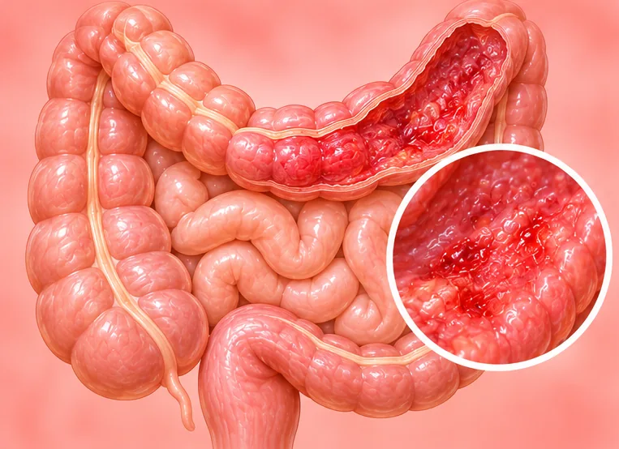
Abses abdomen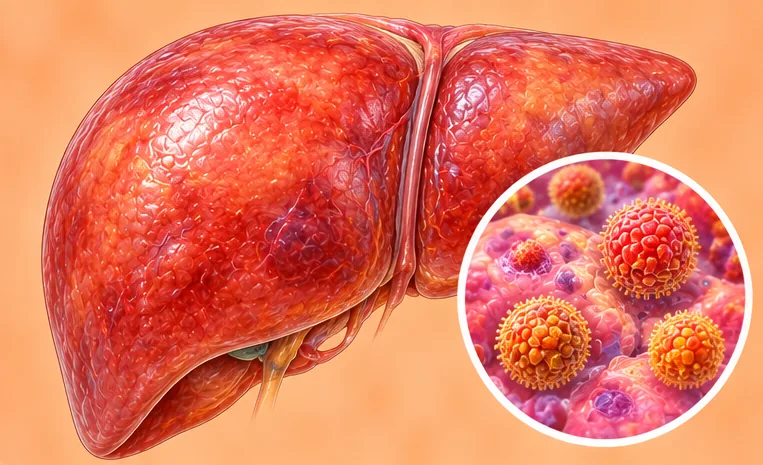
Abses hati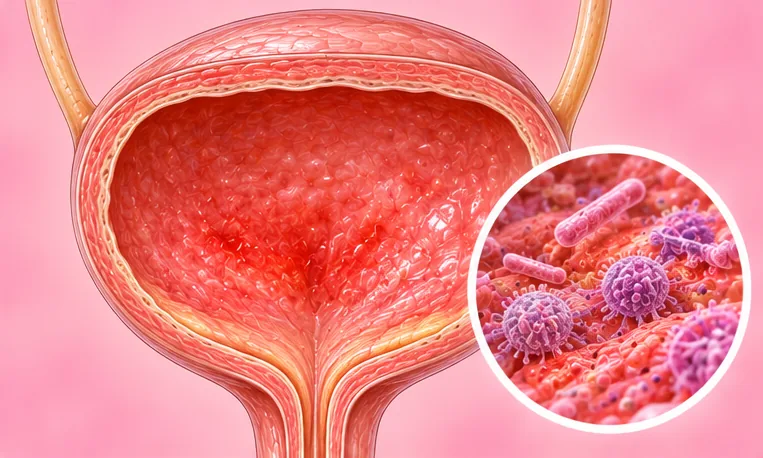
Air kencing berwarna hijau- Air kencing berwarna kuning
- Air kencing berwarna merah
- Air kencing berwarna putih
- Air kencing dengan mendapan putih
 Akalasia (gangguan menelan)
Akalasia (gangguan menelan)- Aliran kencing bercabang
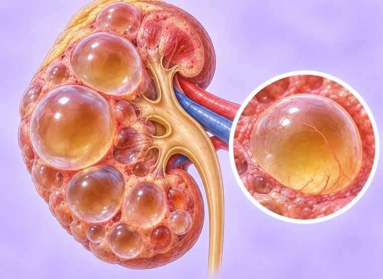
Angiomiolipoma buah pinggang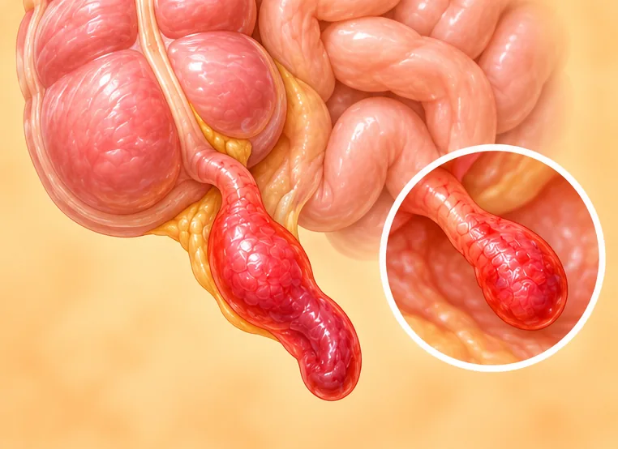
Apendisitis (radang usus buntu)- Apendisitis kronik
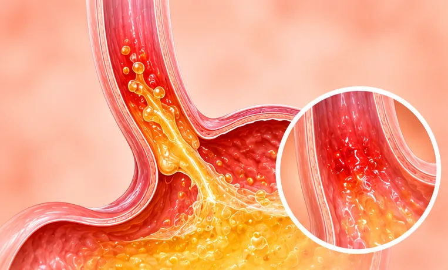
Asid perut berlebihan (hiperasiditi) Asid urik tinggi
Asid urik tinggi Atrofi gastrik
Atrofi gastrik Batu hempedu
Batu hempedu- Batu hempedu
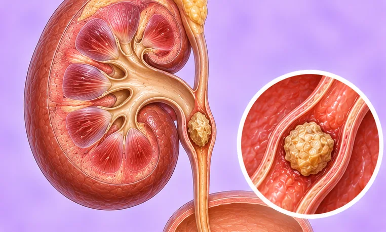
Batu karang buah pinggang- Batu saluran hempedu
- Batu saluran hempedu dalam hati (intrahepatik)
- Batu saluran hempedu luar hati (ekstrahepatik)
- Batu saluran hempedu sepunya
- Batu ureter
- Bintik merah pada perut
 Buah pinggang bengkak (hidronefrosis)
Buah pinggang bengkak (hidronefrosis)- Buah pinggang jatuh (nefroptosis)
- Bulbitis duodenum
 Cacing gelang saluran hempedu (askariasis bilier)
Cacing gelang saluran hempedu (askariasis bilier)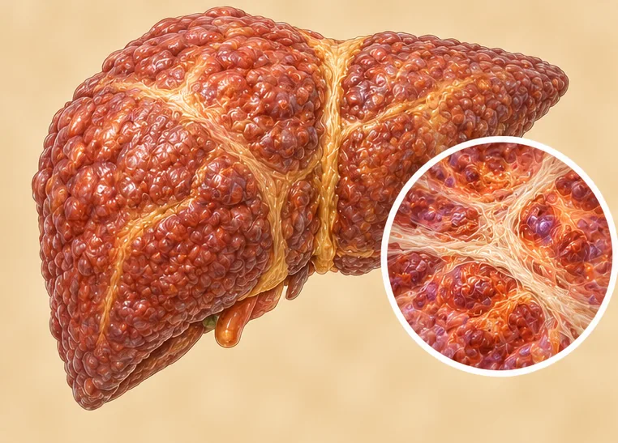
Cecair dalam perut yang sukar dirawat (asites) Cirit-birit
Cirit-birit- Cirit-birit berlemak (steatorea)
- Cirit-birit kronik
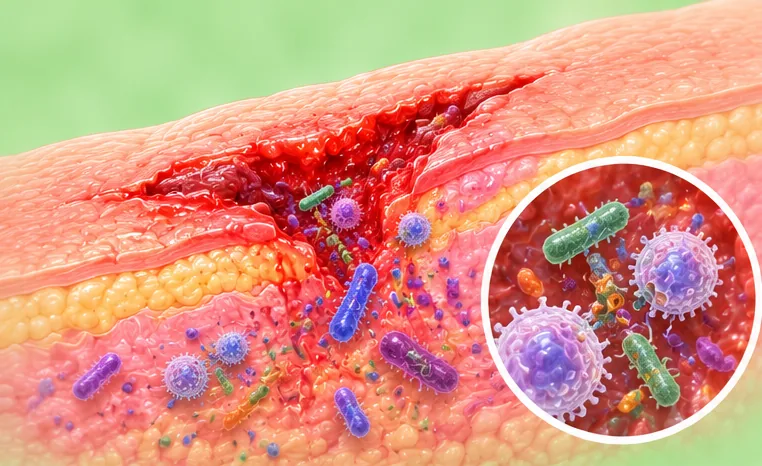
Cirit-birit norovirus- Darah dalam air kencing
- Darah dalam air kencing (hematuria)
- Darah tersembunyi dalam air kencing
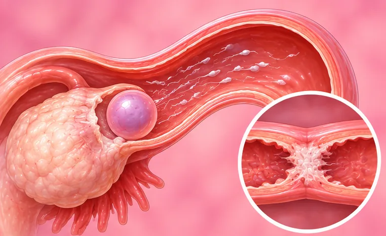
Defek fasa luteal Diabetes insipidus
Diabetes insipidus- Disenteri basilari toksik
- Disentri amuba (amebiasis usus)
- Disentri bakteria (shigelosis)
 Divertikulum duodenum
Divertikulum duodenum- Divertikulum Meckel
- Duodenitis
- Enteritis (keradangan usus)
- Enteritis hemoragik akut (usus berdarah)
- Esofagitis (keradangan esofagus)
- Esofagitis refluks (asid merengsa esofagus)
- Esofagus Barrett
 Feokromositoma
Feokromositoma- Fibrosis hati (parut pada hati)
- Fibrosis retroperitoneal idiopatik
- Fistula usus
- Fungsi hati lemah (insufisiensi hati)
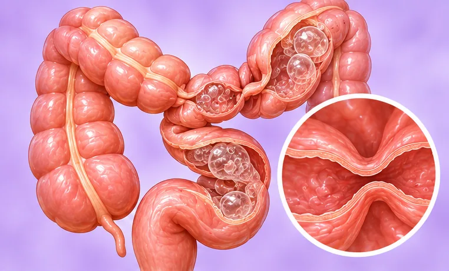
Gangguan fungsi penghadaman- Gastrinoma
- Gastritis (radang lapisan perut)
- Gastritis antrum (bahagian bawah perut)
- Gastritis atrofik
- Gastritis erosif (lapisan perut terhakis)
- Gastritis korosif
- Gastritis kronik
- Gastritis kronik bukan atrofik
- Gastritis refluks hempedu
- Gastritis simpleks akut
- Gastritis superfisial kronik
- Gastroenteritis (radang perut dan usus)
- Gastroenteritis akut (jangkitan perut dan usus)
- Gastroenteritis kronik (radang perut dan usus)
- Gastroenteritis rotavirus
- Gastroenteritis virus (radang perut dan usus)
- Gastroparesis (pengosongan perut lambat)
- Gastroparesis diabetik (pengosongan perut lambat)
- Glukosa puasa terjejas (IFG)
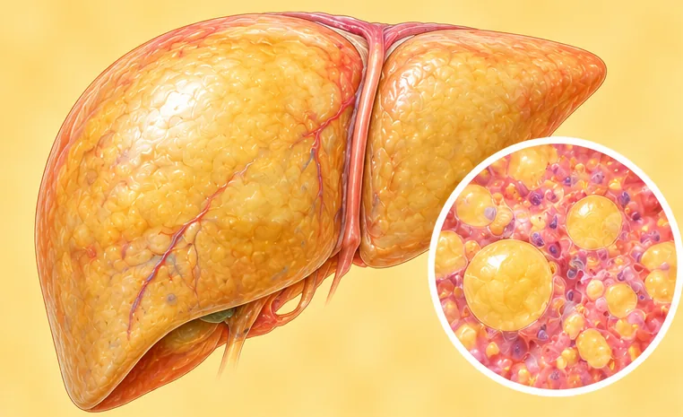
Hati berlemak- Hati berlemak ringan
- Hati berlemak tahap sederhana
- Hati berlemak teruk
- Hemangioma hati (tumor salur darah jinak)
- Hepatitis
- Hepatitis autoimun
- Hepatitis B akut
- Hepatitis B kronik
- Hepatitis B, HBeAg negatif (tiga positif kecil)
- Hepatitis B, HBeAg positif (tiga besar)
- Hepatitis C
- Hepatitis D
- Hepatitis dengan penyakit kuning (ikterik)
- Hepatitis E
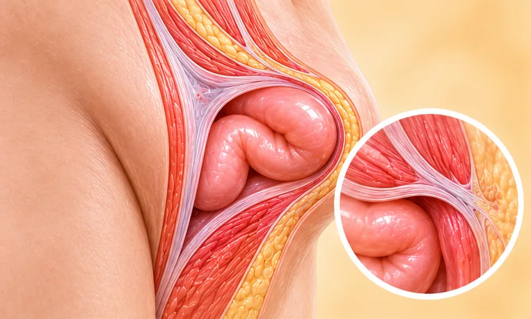
Hernia- Hernia dinding abdomen (hernia luaran)
- Hernia femoral (benjolan berhampiran pangkal paha)
- Hernia hiatus
- Hernia inguinal langsung
- Hernia inguinal tidak langsung
- Hernia pangkal paha (hernia inguinal)
- Hernia pusat (hernia umbilikus)
- Hernia usus kecil
- Hipertensi portal (tekanan tinggi vena hati)
- Insulin tinggi (hiperinsulinemia)
 Intoleransi laktosa
Intoleransi laktosa- Iskemia mesenterik (aliran darah ke usus kurang)
- Jangkitan buah pinggang (pielonefritis)
- Jangkitan buah pinggang akut (pielonefritis)
 Jangkitan cacing hati Cina (klonorkiasis)
Jangkitan cacing hati Cina (klonorkiasis)- Jangkitan H. pylori di perut
- Jangkitan saluran hempedu (kolangitis)
- Jangkitan saluran kencing berkomplikasi
- Jangkitan saluran kencing berulang (UTI)
 Kanser apendiks (usus buntu)
Kanser apendiks (usus buntu)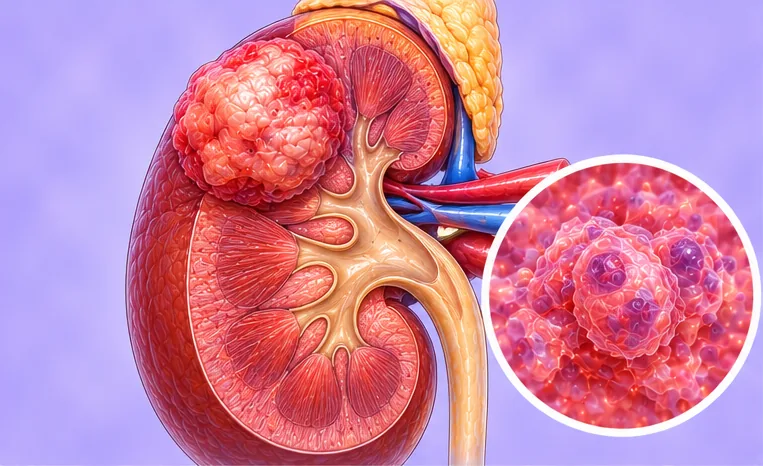
Kanser buah pinggang- Kanser buah pinggang bersista
- Kanser buah pinggang duktus pengumpul
- Kanser buah pinggang sel jernih
- Kanser buah pinggang yang merebak (metastatik)
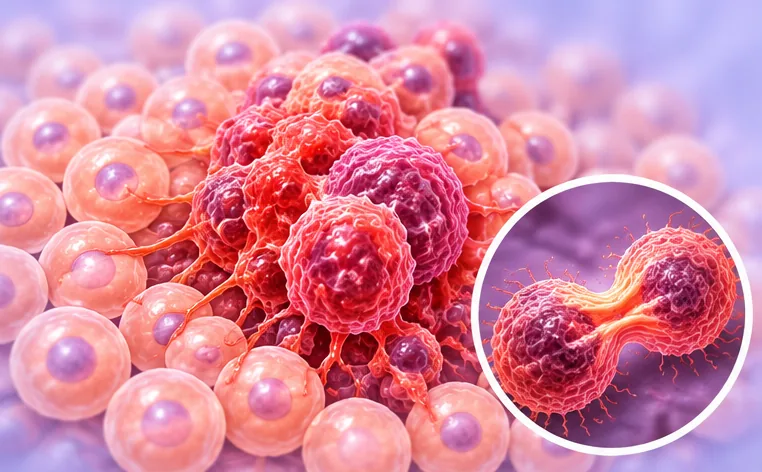
Kanser duodenum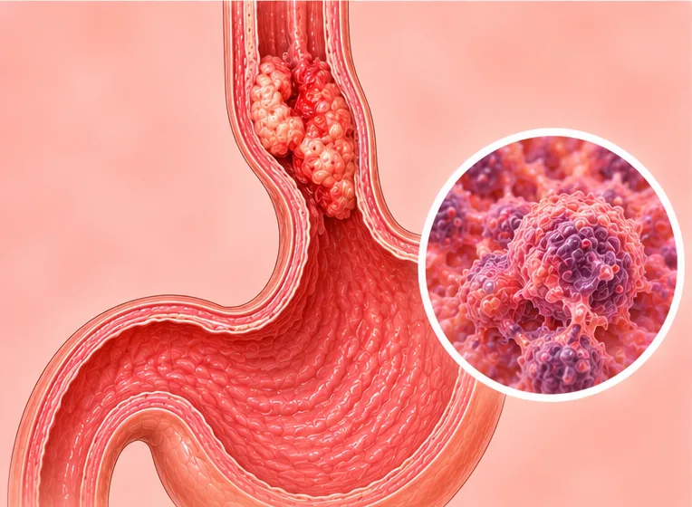
Kanser esofagus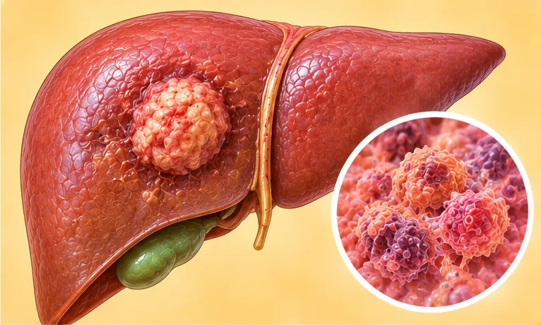
Kanser hati- Kanser hati bersaiz kecil
- Kanser hati primer
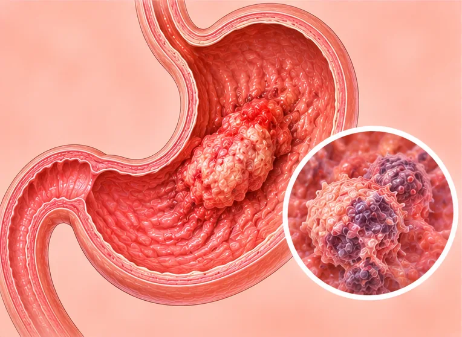
Kanser kardia (bahagian atas perut)- Kanser kolon sigmoid
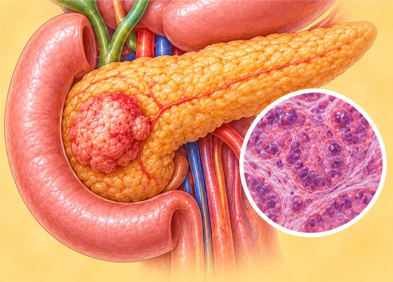
Kanser pankreas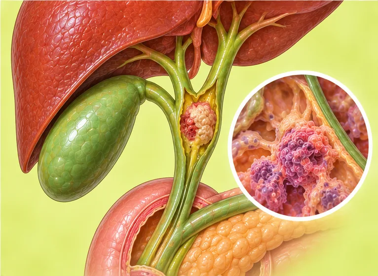
Kanser periampula- Kanser perut
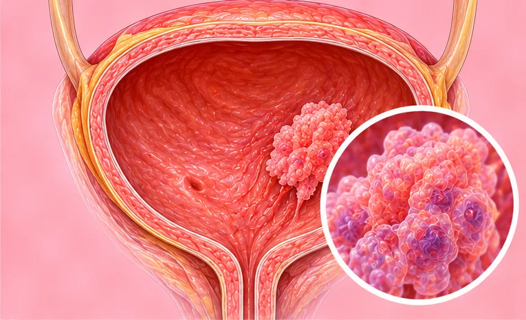
Kanser pundi hempedu- Kanser saluran hempedu (kolangiokarsinoma)
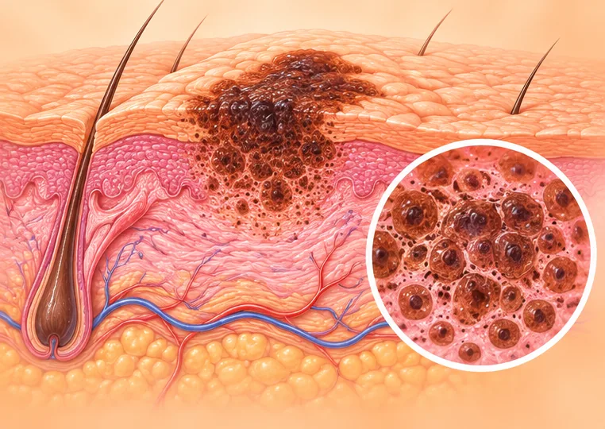
Kanser saluran hempedu hilar (tumor Klatskin)- Kanser urakus
- Kanser usus besar (kolon)
- Kanser usus besar (kolorektal)
- Kantung pada esofagus (divertikulum esofagus)
- Karsinoma sel skuamus serviks (kanser serviks)
- Kebocoran air kencing (inkontinens)
- Kecederaan buah pinggang akut
- Kegagalan buah pinggang
- Kegagalan buah pinggang (uremia)
- Kegagalan buah pinggang kronik
- Kegagalan hati
- Kegagalan hati akut
- Kejang perut dan usus
- Kekejangan usus (spasme usus)
- Kencing manis akibat steroid
- Kencing manis pada warga emas
- Keradangan kardia (bahagian atas perut)
- Keradangan sekum (tiflitis)
- Kerap terjaga pada waktu malam untuk kencing
- Kesan selepas pembuangan pundi hempedu
- Ketidakseimbangan bakteria usus (disbiosis)
- Kolitis (usus besar meradang)
- Kolitis kronik (radang usus besar)
- Kolitis pseudomembranus
- Kolitis ulseratif
- Kolon sigmoid terlalu panjang (dolikosigmoid)
 Leiomioma (tumor otot licin)
Leiomioma (tumor otot licin)- Lekatan usus
- Limfadenitis mesenterik
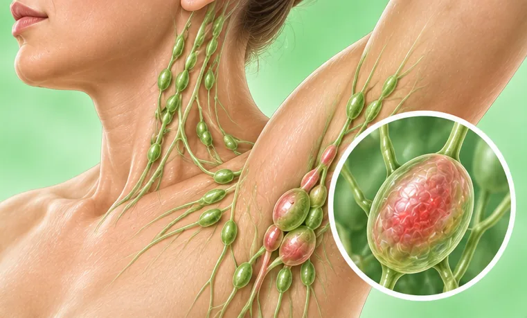
Limfoma buah pinggang- Limfoma gastrik
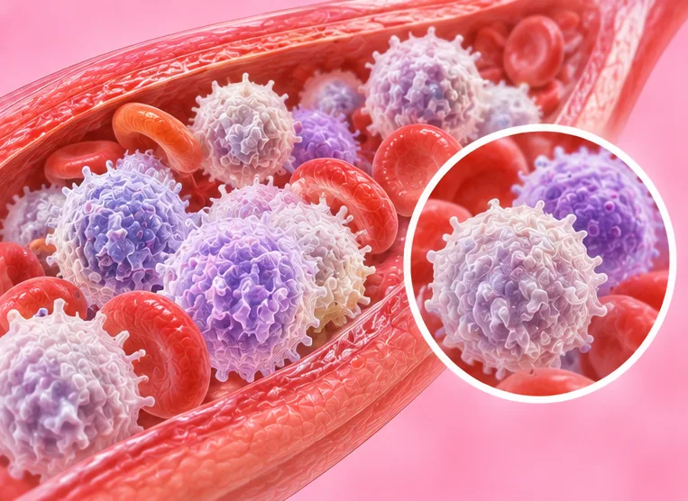
Limpa tambahan- Limpa terlebih aktif (hipersplenisme)
 Malnutrisi protein-tenaga
Malnutrisi protein-tenaga- Melanosis koli (lapisan usus besar menggelap)
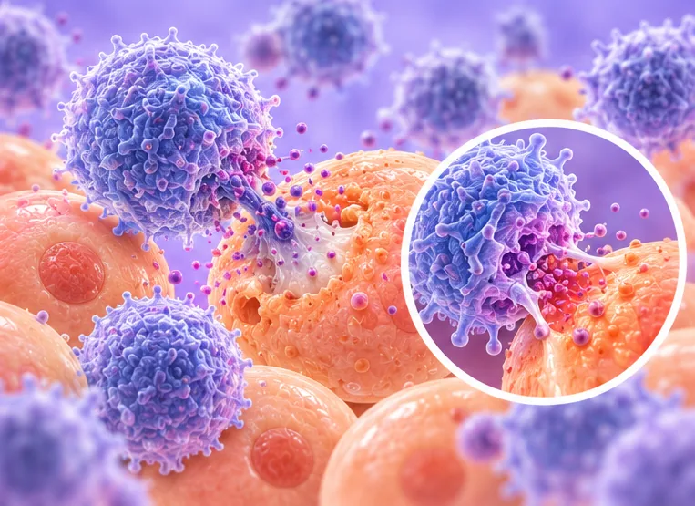
Nefritis lupus (radang buah pinggang)- Neuropati periferi diabetik (kerosakan saraf)
- Nodul (ketulan kecil)
 Osteodistrofi renal
Osteodistrofi renal- Panikulitis mesenterik
- Pankreatitis (radang pankreas)
- Pankreatitis akut
- Pankreatitis bilier (pankreatitis batu hempedu)
- Pankreatitis kronik (radang pankreas)
- Pelebaran saluran hempedu (sista koledokal)
- Pembawa hepatitis B
- Pendarahan saluran gastrousus atas
- Pendarahan saluran gastrousus bawah
- Pendarahan saluran penghadaman
- Penyakit buah pinggang diabetik (nefropati)
- Penyakit buah pinggang kronik
- Penyakit buah pinggang polisistik
- Penyakit Crohn
- Penyakit hati autoimun
- Penyakit hati berkaitan alkohol
- Penyakit hidatid hati (ekinokokosis)
- Penyakit kuning (jaundis)
- Penyakit radang usus (IBD)
- Penyakit Wilson (pengumpulan tembaga)
- Penyempitan ureter (striktur ureter)
- Peritonitis (radang selaput abdomen)
- Peritonitis akut (radang selaput perut)
- Peritonitis primer
 Peritonitis tibi (peritonitis tuberkulosis)
Peritonitis tibi (peritonitis tuberkulosis)- Perut jatuh (gastroptosis)
- Polip
- Polip gastrik
- Polip pundi hempedu
- Polip usus
- Polip usus besar (kolon)
- Polip usus besar (kolon)
- Pra-diabetes
- Radang buah pinggang (nefritis)
- Radang buah pinggang akut (nefritis)
- Radang buah pinggang selepas purpura alahan
- Radang pundi hempedu
- Radang pundi hempedu akut (kolesistitis)
- Radang pundi hempedu kronik (kolesistitis)
- Radang usus kronik
- Rasa mahu kencing secara mendadak
- Rasa pundi kencing tidak kosong sepenuhnya
- Refluks asid (GERD)
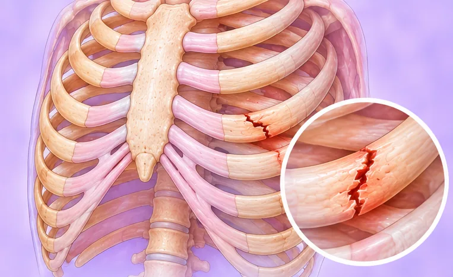
Retak tulang rusuk- Retensi gastrik (makanan tersekat dalam perut)
- Rintangan insulin
- Sakit ketika kencing
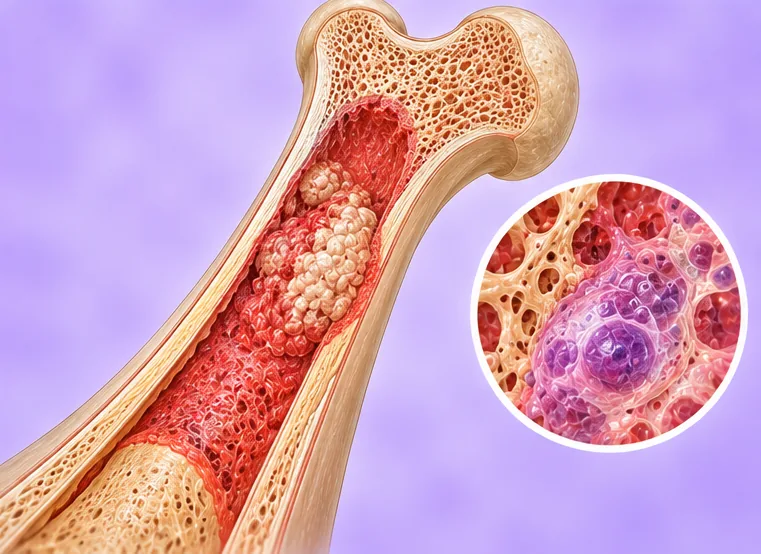
Sarkoma buah pinggang- Sedu yang sukar dirawat
- Selesema perut
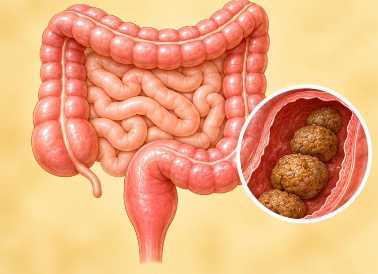
Sembelit- Sembelit fungsional
- Sembelit yang sukar dirawat
- Senak (dispepsia fungsian)
- Senak (dispepsia)
 Senggugut (haid sakit)
Senggugut (haid sakit)- Sindrom Budd-Chiari (vena hati tersumbat)
- Sindrom hepatorenal
- Sindrom malabsorpsi usus kecil
- Sindrom nefrotik
- Sindrom nutcracker
- Sindrom usus pendek
- Sindrom usus rengsa
- Sirosis hati
- Sista
- Sista hati
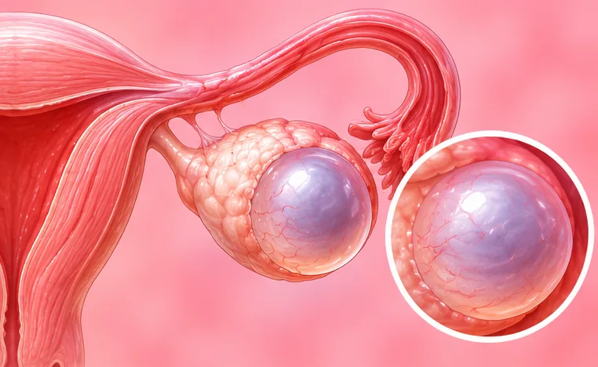
Sista pelvis Stenosis arteri renal
Stenosis arteri renal- Sukar kencing
- Sukar untuk mula kencing
- Sumbatan pilorus (saluran keluar perut)
- Sumbatan usus (obstruksi usus)
- Sumbatan usus akibat lekatan
- Sumbatan usus lengkap
- Sumbatan usus mekanikal
- Sumbatan usus ringkas
- Sumbatan usus separa
- Sumbatan usus vaskular (bekalan darah terjejas)
- Tibi buah pinggang
- Tibi usus (tuberkulosis usus)
- Tompok putih pada esofagus (leukoplakia)
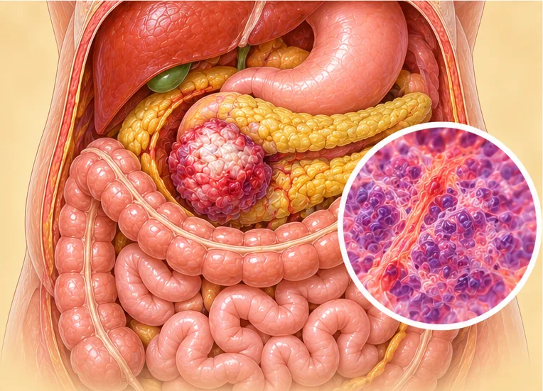
Tumor abdomen- Tumor esofagus jinak
- Tumor gastrik
- Tumor hati
- Tumor hati jinak
- Tumor jinak
- Tumor jinak pundi hempedu
- Tumor kardia (bahagian atas perut)
- Tumor karsinoid buah pinggang
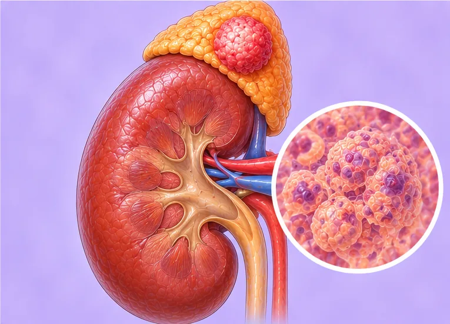
Tumor kelenjar adrenal- Tumor pankreas
- Tumor pelvis renal
- Tumor retroperitoneal
- Tumor saluran hempedu
- Tumor sel islet pankreas
- Tumor stromal gastrousus (GIST)
- Ulser bulbus duodenum
- Ulser duodenum
- Ulser esofagus
- Ulser peptik
- Ulser perut
- Ulser stres
- Usus lumpuh (ileus paralitik)
- Vena membengkak pada esofagus dan perut (varises)